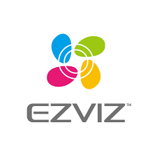

Parte delantera

Conector

Marca

Parte delantera
Conector
Marca
DESCRIPCION: Cámara IP modelo CS-H3-R100-1J5WKFL. Sensor de Imagen CMOS de Escaneo Progresivo de 1/2.7". Lente 2.8 mm a F2.0, ángulo de visión: 114° (Diagonal), 96° (Horizontal), 51° (Vertical). Iluminación Mínima 0.01 Lux a (F2.0, AGC ENCENDIDO), 0 lux con infrarrojo (IR). 3D DNR. WDR Digital. Distancia de visión nocturna por infrarrojos Hasta 30 metros. Máx. Resolución 2880 x 1620 píxeles. Tasa de Cuadros por Segundo Máxima: 30 fps, autoadaptativo durante la transmisión de red. Compresión de Video H.265 / H.264. Máx. Tasa de Bits 4 Mbps. Red Wifi estándar IEEE802.11b, 802.11g, Rango de Frecuencia 2.4 GHz ~ 2.4835 GHz. Ancho de Banda del Canal: Soporta 20 MHz. Red Cableada 1 RJ45 (10 M / 100 M Puerto Ethernet Adaptativo). Funciones: Detección de personas / vehículos mediante IA, detección de movimientos de la mano, detección de movimiento. Almacenamiento Local: Soporta tarjeta microSD (hasta 512 GB, no incluida). Almacenamiento en la Nube: Soporta almacenamiento en EZVIZ CloudPlay (se requiere suscripción). Alimentación: 12 V CC / 1A (incluida). Consumo de Energía Máx. 8 W. Dimensiones 75.5 x 75.5 x 155 mm. Peso neto: 433 grs. Grado IP67. Condiciones de Funcionamiento -30 °C a 60 °C, Humedad 95% o menor (sin condensación).